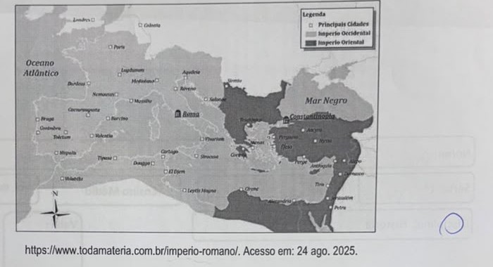

Professora: Bruna · AC1 · Simulado Vital
Analise o mapa abaixo e responda os itens:

https://www.todamateria.com.br/imperio-romano/. Acesso em: 24 ago. 2025.
a) A partir de seus conhecimentos, descreva o contexto histórico que deu origem a segunda capital apontada no mapa.
b) A partir do século V houve ou não um processo de ruralização na região ocidental presente no mapa? Justifique.
a) A segunda capital é Constantinopla, fundada pelo imperador Constantino em 330 d.C. (sobre a antiga cidade de Bizâncio), num contexto de crise do Império Romano — instabilidade política, pressão nas fronteiras e necessidade de um centro administrativo mais próximo das regiões orientais, mais ricas e estratégicas. Mais tarde, em 395 d.C., o imperador Teodósio dividiu definitivamente o império em Ocidental (capital Roma) e Oriental (capital Constantinopla). É importante notar que isso é anterior às grandes invasões bárbaras que derrubariam Roma em 476 — a criação de Constantinopla foi uma decisão administrativa/estratégica do próprio império, não uma reação às invasões.
b) Sim, houve um processo de ruralização (êxodo urbano) na região ocidental a partir do século V. Com as invasões bárbaras e o enfraquecimento do poder central, as cidades entraram em declínio (insegurança, quebra das rotas comerciais, colapso da administração), e parte da população migrou para o campo, buscando proteção e subsistência junto a grandes proprietários de terra — um processo que ajuda a explicar a origem das relações de dependência que mais tarde caracterizariam o feudalismo.
Analise a manchete abaixo e responda o item:
Menosprezada pela história, herança banto é um pilar central da formação do Brasil
Livro da USP mergulha na presença banto na história, cultura, língua e religião
Jornal da USP, por Laura Pereira Lima
https://jornal.usp.br/diversidade/menosprezada-pela-historia-heranca-banto-e-um-pilar-central-da-formacao-do-brasil/. Acesso em: 28 abr. 2025.
Explique o significado da manchete da notícia, à luz da história do continente africano.
A manchete evidencia como a historiografia tradicional (eurocêntrica) menosprezou e apagou as contribuições das culturas africanas — em especial dos povos banto, majoritariamente da região da África Central-Ocidental (atual Angola/Congo) — na formação da sociedade brasileira, apesar de sua influência profunda e duradoura (língua, religião, culinária, música). Isso se relaciona diretamente com o processo de escravização em massa de povos africanos trazidos ao Brasil durante o tráfico atlântico: apesar de serem um dos pilares formadores da cultura e identidade brasileiras, essas contribuições foram historicamente subestimadas por uma narrativa histórica que privilegiava a herança europeia. A manchete é, então, um convite a reconhecer e "reescrever" essa história, dando o devido peso à herança banto.
Leia o texto abaixo e responda o item:
Foi um monge agostiniano e professor de teologia germânico que se tornou uma das figuras centrais da Reforma Protestante. Levantou-se, veementemente, contra diversos dogmas do catolicismo romano, contestando a doutrina de que o perdão de Deus poderia ser adquirido pelo comércio das indulgências. Essa discordância inicial resultou na publicação de suas famosas 95 Teses, em 1517, em um contexto de conflito aberto contra o vendedor de indulgências Johann Tetzel. Sua recusa em se retratar de seus escritos, a pedido do Papa Leão X, em 1520, e do imperador Carlos V, na Dieta de Worms, em 1521, resultou em sua excomunhão da Igreja Romana e em sua condenação como um fora da lei pelo imperador do Sacro Império Romano-Germânico.
Por qual(is) motivo(s) é possível afirmar que o monge citado no texto também promoveu uma proposta que influenciou os rumos políticos na Europa, no século XVI?
O monge é Martinho Lutero (mesmo não sendo nomeado no texto). Além da dimensão religiosa, a Reforma teve um forte impacto político: ao romper com Roma, ela enfraqueceu o poder centralizador do Papado sobre os estados europeus, e vários príncipes e governantes (sobretudo germânicos) se converteram ao protestantismo como forma de afirmar sua autonomia política frente à autoridade papal e ao Sacro Império Romano-Germânico. Isso fortaleceu o poder dos estados territoriais/nacionais em detrimento do poder papal universal, contribuindo para a formação dos Estados modernos, além de gerar conflitos político-religiosos (como a Guerra dos Camponeses e, depois, a Guerra dos Trinta Anos) que reconfiguraram o mapa político europeu.
Analise o trecho abaixo e responda o item:
Os mosteiros eram em primeiro lugar casas, cada uma abrigando sua 'família', e as mais perfeitas, com efeito, as mais bem ordenadas: de um lado, desde o século IX, os mais abundantes recursos convergiam para a instituição monástica, levando-a aos postos avançados do progresso cultural; do outro, tudo ali se encontrava organizado em função de um projeto de perfeição, nítido, bem estabelecido, rigorosamente medido.
(Georges Duby. "A vida privada nas casas aristocráticas da França feudal". História da vida privada, vol. 2, 1992. Adaptado.)
No período descrito no texto, relacione o processo de formação de encelulamento ou Feudalismo com as informações descritas pelo autor.
"Encelulamento" é o conceito historiográfico que descreve a fragmentação do poder, a partir dos séculos IX-X, em núcleos locais autônomos — mosteiros, castelos, senhorios — que concentravam poder econômico, militar e religioso na sua própria região, substituindo o poder central que se desfazia (fim do império carolíngio). O trecho de Duby descreve exatamente esse fenômeno: os mosteiros funcionando como "casas" organizadas e hierarquizadas, concentrando recursos abundantes e se tornando polos avançados de poder e cultura — um exemplo claro de "célula" de poder local, característica da formação do feudalismo, ao lado dos castelos e senhorios leigos. (Atenção: essa questão pede pra relacionar o texto sobre os mosteiros com o conceito de encelulamento — não é sobre a origem geral do feudalismo com nobres/vassalagem, nem sobre as Cruzadas ou o comércio de especiarias, que são temas de outro período/contexto.)
Analise o quadro abaixo e responda os itens:
[Reprodução da Mona Lisa, de Leonardo da Vinci]
https://www.significados.com.br/mona-lisa/. Acesso em: 17 jun. 2025.
a) A obra acima faz parte de qual movimento cultural, presente no mundo europeu entre XIV e XVI?
b) Por qual(is) motivo(s) o olhar da personagem retratada pode ser visto como exemplo de um princípio da prática científica moderna? Justifique.
a) A obra faz parte do Renascimento.
b) Leonardo da Vinci era tanto artista quanto estudioso da natureza e da anatomia humana (chegou a dissecar cadáveres para entender a estrutura do corpo). O realismo da Mona Lisa — a técnica do sfumato, o jogo de luz e sombra, a precisão do olhar — vem dessa observação empírica cuidadosa, não de convenções estilizadas como na arte medieval. Esse princípio — observar a realidade diretamente para representá-la com precisão — é o mesmo princípio que fundamentaria o método científico moderno (observação, experimentação), consolidado logo depois na Revolução Científica dos séculos XVI-XVII.
Analise a manchete abaixo e responda o item:
Jennifer Hermoso debocha da seleção brasileira feminina: 'não jogaram futebol'
Jogadora criticou seleção brasileira, que venceu a Espanha por 4 a 2 e garantiu vaga na final olímpica do futebol feminino
A partir da notícia veiculada na manchete, explique por qual(is) motivo(s) é possível refletir sobre o processo de colonização do continente americano.
A fala da jogadora espanhola — desqualificando o desempenho da seleção brasileira mesmo depois de uma derrota — ecoa uma postura de superioridade europeia em relação à América Latina, herdada do processo histórico de colonização. Durante a colonização, os europeus (incluindo a própria Espanha, colonizadora de boa parte da América) construíram uma visão de si mesmos como culturalmente superiores aos povos americanos, justificando a dominação e exploração colonial. Essa mentalidade hierárquica deixou heranças de preconceito que ainda se manifestam hoje, inclusive em contextos aparentemente distantes da história, como uma disputa esportiva.
Analise o texto abaixo e responda o item:
A Inglaterra de 1603 era uma potência de segunda classe; a Grã-Bretanha de 1714 era a maior potência mundial. [...] os hábitos alimentares dos ingleses transformaram-se com a introdução de raízes comestíveis, o que permitiu manter o gado vivo e ter carne fresca no inverno. Foi introduzida a batata, além de muitos novos cultivos, como o chá, o café, o chocolate, o açúcar e o tabaco. [...]
(Christopher S. Hill. O século das revoluções: 1603-1714, 2012.)
Explique, a partir do governo de Elisabeth I e de Oliver Cromwell, como foram introduzidos: batata, café e seda, na cultura inglesa.
Sob Elisabeth I (1558-1603), a Inglaterra expandiu sua presença marítima e exploratória nas Américas (expedições como as de Walter Raleigh), o que trouxe produtos americanos até então desconhecidos na Europa, como a batata (originária dos Andes). Já sob Oliver Cromwell (líder da Commonwealth após a Guerra Civil Inglesa), os Atos de Navegação (1651) restringiram o comércio inglês a navios ingleses, fortalecendo diretamente o comércio marítimo/colonial britânico — o que facilitou a importação direta de produtos do Oriente e de outras regiões, como café e seda, por comerciantes ingleses. Ou seja: Elisabeth I abre as rotas exploratórias que trazem a batata das Américas; Cromwell consolida o controle inglês sobre o comércio marítimo que passa a trazer café e seda diretamente.
Analise o trecho abaixo e responda os itens:
O açúcar e suas técnicas de produção foram levados à Europa pelos árabes no século VIII, durante a Idade Média, mas foi principalmente a partir das Cruzadas (séculos XI e XIII) que a sua procura foi aumentando. Nessa época, passou a ser importado do Oriente Médio e produzido em pequena escala no sul da Itália, mas continuou a ser um produto de luxo, extremamente caro, chegando a figurar nos dotes de princesas casadoiras.
Campos, R. Grandeza do Brasil no tempo de Antonil (1681-1716). São Paulo: Atual, 1996.
Com base no texto, explique o motivo que levou Portugal a escolher o item citado para mudar a relação com a Colônia na América, a partir de 1530.
O motivo central foi a alta demanda e o alto valor do açúcar no mercado europeu (produto de luxo caríssimo, como o texto explica). Antes de 1530, a colônia americana de Portugal tinha pouca exploração econômica sistemática (principalmente extração de pau-brasil). Buscando uma forma lucrativa de explorar o Brasil, Portugal viu no clima tropical brasileiro a condição ideal para o cultivo da cana-de-açúcar, e passou a organizar a colonização em torno da produção açucareira — grandes propriedades monocultoras (plantation), voltadas para exportação à Europa, com mão de obra inicialmente indígena e depois majoritariamente escravizada africana. Isso deu início à colonização efetiva e sistemática do Brasil a partir de 1530. (O ponto central é a demanda do mercado europeu pelo açúcar — não uma tentativa de "ensinar" a produção aos povos indígenas.)
Analise a descrição do documentário abaixo e responda os itens:
As Guerras da Conquista
Documentário · Brasil · 2018 · 26 min · A10
Parte da série: Guerras do Brasil.doc, 5 eps de (em média) 26min
De Luiz Bolognesi · Com Ailton Krenak, Carlos Fausto, João Pacheco de Oliveira, Pedro Luis Puntoni, Sonia Guajajara
A guerra da conquista ainda não acabou. Ela já tem mais de 500 anos e continua viva. O 1º episódio da série conta a invasão e colonização do Brasil. A chegada dos Portugueses nas praias Brasileiras em 1500 e sua relação com os índios que ocupavam este terri...
a) A descrição do documentário contém um anacronismo. Aponte e explique qual seria.
b) Do ponto de vista indígena, ocorreu ou não um descobrimento do território do continente americano? Justifique.
a) O anacronismo mais claro é usar o nome "Brasil"/"praias Brasileiras" para descrever o território em 1500 — nessa época, esse nome e a própria ideia de "Brasil" como território/nação ainda não existiam (a terra recém-avistada foi inicialmente chamada de "Terra de Vera Cruz" ou "Terra de Santa Cruz"; o nome "Brasil", e mais ainda a noção de uma nação brasileira, são construções posteriores). Aplicar retroativamente um nome/conceito de uma época para descrever outra anterior é a definição clássica de anacronismo. (A frase "a guerra ainda não acabou" não é bem um anacronismo — é mais uma escolha do documentário pra enfatizar a continuidade dos impactos da colonização até hoje, algo defensável do ponto de vista da série.)
b) Do ponto de vista indígena, não houve "descobrimento". Os povos indígenas já habitavam o continente havia milênios antes da chegada dos europeus, com pleno conhecimento do seu próprio território. O termo "descobrimento" carrega uma perspectiva eurocêntrica que ignora essa presença prévia — por isso a historiografia crítica atual prefere usar termos como "invasão" ou "conquista", já que os europeus não descobriram algo desconhecido, mas invadiram um território já ocupado e conhecido por seus povos originários.
Analise o trecho abaixo e responda os itens:
Nasce daqui uma questão: se vale mais ser amado que temido ou temido que amado. Responde-se que ambas as coisas seriam de desejar; mas porque é difícil juntá-las, é muito mais seguro ser temido que amado, quando haja de faltar uma das duas. Porque dos homens se pode dizer, duma maneira geral, que são ingratos, volúveis, simuladores, covardes e ávidos de lucro, e enquanto lhes fazes bem são inteiramente teus, oferecem-te o sangue, os bens, a vida e os filhos, quando, como acima disse, o perigo está longe; mas quando ele chega, revoltam-se.
Maquiavel, N. O príncipe. Rio de Janeiro: Bertrand, 1991.
a) Explique a tese defendida por Maquiavel no trecho acima.
b) Relacione a proposta de Maquiavel, contida no excerto, com a construção do Estado Moderno.
a) Maquiavel defende que, embora o ideal fosse ser amado e temido ao mesmo tempo, como isso é difícil de conciliar na prática, é mais seguro para o governante ser temido do que amado. O motivo: os homens são, de forma geral, ingratos e volúveis — demonstram lealdade enquanto tudo vai bem, mas abandonam ou se revoltam contra o governante assim que o perigo chega. O medo, ao contrário do amor, não depende da boa vontade das pessoas, e por isso garante mais segurança ao poder.
b) Maquiavel é considerado um dos fundadores do pensamento político moderno justamente por separar a política da moral/religião — uma ruptura com a visão medieval, que subordinava o poder político a princípios religiosos cristãos. Ele defende que o governante deve agir com pragmatismo ("razão de Estado"), usando o poder de forma centralizada e eficaz para garantir a estabilidade — inclusive pelo medo, se necessário. Essa concepção de poder centralizado e pragmático é uma base importante do pensamento que sustentaria a formação dos Estados absolutistas modernos, com o poder concentrado na figura do soberano.